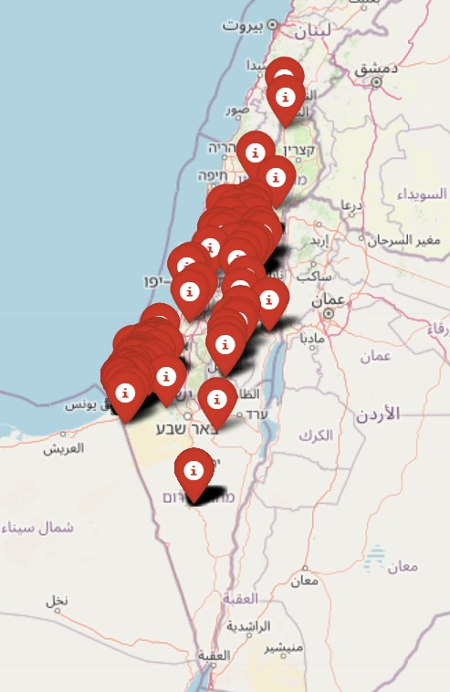

Death Toll Israel
The map of Israel, dotted with numerous markers, poignantly depicts the heavy toll of war and terrorism over recent years. Each pin signifies a life lost, reflecting the profound suffering endured by individuals and families amid ongoing conflict. This stark visual representation serves as a grim reminder of the urgent need for dialogue and reconciliation, emphasizing the critical importance of striving for peace.
